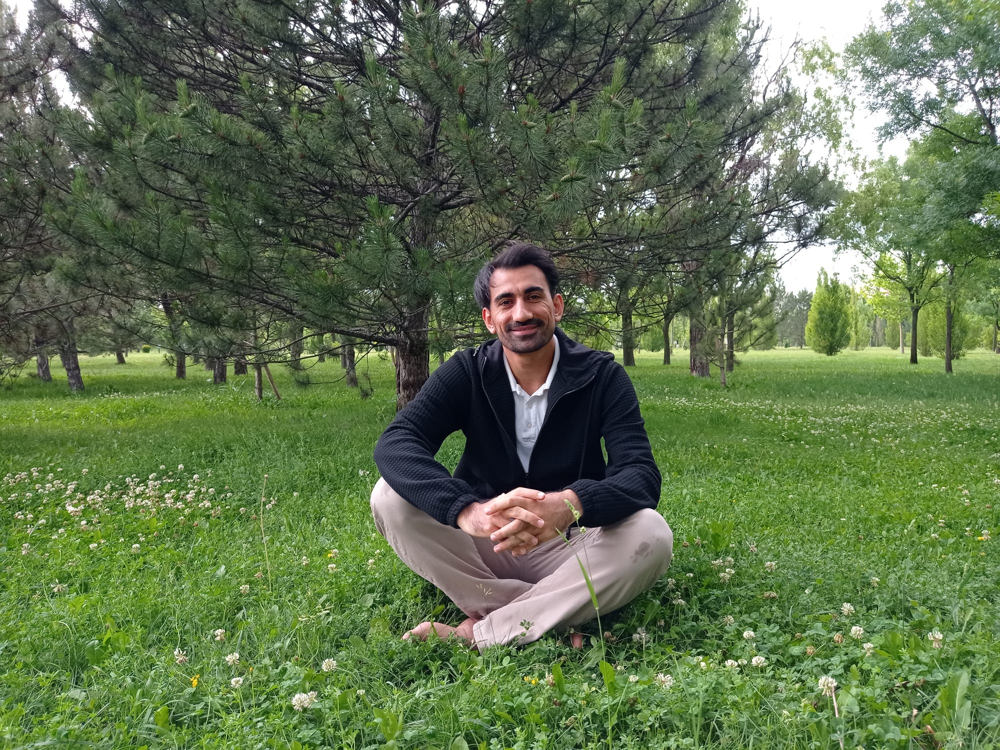

About Me

Hello, I'm Murat Kaynar from Cizre. I'm a Computer Engineering student at Ankara Yıldırım Beyazıt University. I enjoy traveling, playing bağlama, and singing. Welcome to my personal blog where I share my thoughts, experiences, and interests.